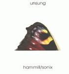

| Artist: | Hammill/Sonix |
| Title: | Unsung |
| Label: | Fie! Fie 9124 |
| Length(s): | 48 minutes |
| Year(s) of release: | 2001 |
| Month of review: | [02/2002] |
| 1) | Gated | 3.03 |
| 2) | West Pole | 3.33 |
| 3) | Delinquent | 2.26 |
| 4) | Handsfree | 2.29 |
| 5) | Eyebrows | 3.36 |
| 6) | Delighted | 2.58 |
| 7) | 861 And Counting | 4.04 |
| 8) | Exp | 3.47 |
| 9) | The Printer Port | 3.25 |
| 10) | East Pole | 2.44 |
| 11) | Exeunt | 2.40 |
| 12) | 1 Meg Loop | 3.52 |
| 13) | Gateless | 3.01 |
| 14) | Deliberate | 3.06 |
West Pole is a pretty soundscapy track. It flows nicely along, as soundscape tracks tend to do.
Delinquent moves us into a somewhat more abrasive, with some pretty disruptive sounds, possibly played backwards, considering the gradual attack and sudden decay of the keyboard sounds.
Handsfree takes abrasion to another level, with some pretty blippy stuff going there. This track is definitely an experimental, not a melodic, one. The booklet tells that this stems from Peter's midi set up getting hooked up with his computer spewing data intended for the printer.
Eyebrows has a much clearer sound, and is more or less melodic, with some pizzicato string soundalike keyboards.
Delighted is another soundscape track.
861 And Counting is another taxing one. Sounds like echoing bleeps in a looping tape stuffed into a lesley with varying size exit. If you get my drift. The repeating bleeps sound like they they are spread through a lesley-lilke device, with increasing and decreasing strength of volume. Pretty experimental. The booklet tells that this track was 'found' rather than played, which also goes for Exp and Exuent.
Exp features keyboard strings, once again using the lesley sounding tape loops. Where exponentials are more often hard on one, than not, this track is surprisingly easy to listen to.
The Printer Port sounds like one, or at least the non musical data usually transported across one. In case you hadn't thought of it yourself yet: another (experi)mental one. It's from the same session as Handsfree
East pole is a bit of a reprieve after the electronic assault. A pretty nice flowing track.
Exuent is pretty rhythmically based, thus differing a lot in sound from previous tracks. This track once again is more experimental than it is melodic, but not as abrasive as some others.
1 Meg Loop is a more or less melodic track. Not too exiting.
Gateless musically is a companion to Gated.
Deliberate is another soundscape track.